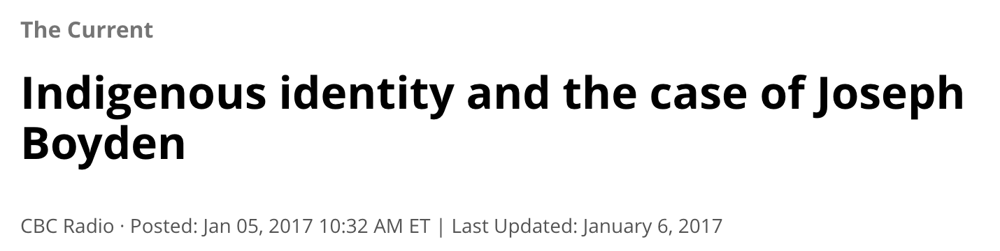

Intellectual Freedom, Academic Freedom, and the Politics
of Recognition
Sam Popowich
Outline
Recent Controversies
Framing: Intellectual Freedom, Academic Freedom,
Censorship
The Politics of Recognition and its Critique
Where does that leave us?
Recent Controversies
Jordan Peterson and Bill C-16
Lindsay Shepherd at Wilfred Laurier
"Hate Groups" inclusion in
Meghan Murphy at VPL, TPL, SFU
Chicago Rules in Ontario and Alberta
"Killing Europe" lawsuit at OPL
Exception: Winnipeg Public Library's Security
Policy
Framing: Intellectual Freedom
In the US: First Amendment
In non-US contexts: 1948 UN Declaration on
CFLA, IFLA statements
John Stuart Mill's On Liberty (1959)
Philosophical extensions taken from Article 19: Everyone has the right to freedom of
opinion and expression; this right includes freedom to hold
opinions without interference and to seek, receive and
impart information and ideas through any media and
regardless of frontiers.
Framing: Academic Freedom
Like intellectual freedom,
academic freedom was designed to protect people who were
outside the dominant social classes (church and nobility) from
the power of those classes. In historical terms, they were
a bourgeois invention in order to support bourgeois challenges
to the power of church and aristocracy. As the power of
capital grew, academic freedom was also leveraged to protect
against the power of the wealthy.
Example: Christian Wolff (1679-1754) (offends
the church in 1723) and Edward Ross (offended the Stanford
family in 1900). The case of Ross is an interesting one, as
Stanford's "first academic freedom case" was over Ross's
racist and eugenicist views, but also over his criticism of
the Stanford family's use of migrant labour (the two were
obviously connected)
Galileo (1564-1642), held up as an ideal defender of academic
freedom (Alfino 2014, 441).
Despite the "galilean ideal" of
academic freedom (Alfino 2014, 441), intellectual and academic
freedom do not draw a distinction between a neutral, objective
search for truth one one hand and temporal power on the other.
Rather, intellectual and academic freedom are weapons
in the
struggle for power between classes and groups. For example, it
is important to remember that Galileo spent the rest of his
life under house arrest. His "speaking truth to power" did not
challenge power of the church in any material way, but
idealism maintains that truth is sufficient to dislodge power.
In the mainstream understanding of
intellectual and academic freedom, the argument is that such
freedom is necessary to achieve social justice. When looked at
from the other perspective, it is tempting merely to reverse
the argument and say that social justice must come first.
However, it is more productive and more just to take a third,
dialectical, approach, and say that intellectual freedom and
social justice are not independent entities, but that we will
only have intellectual freedom in any sense when we have
social justice. In an unjust society, such as the one we live
in, intellectual freedom is impossible. From this perspective,
the struggle for social justice is the struggle for
intellectual freedom. However, to take this approach means we
must abandon the individualistic and idealistic assumptions
that underpin the dominant conceptions of intellectual
freedom. What are the arguments that we can make to do this?
What would a sketch of the critique of intellectual freedom
look like?
Schrader's view here is a common one in librarianship: that
there was once a period of "good capitalism", but it has
been twisted or distorted into something bad (which is why
current capitalism needs to be described using adjectives). John Buschman
takes this view in his theory of the public sphere, and Ed
D'Angelo holds it in his book on "Barbarians at the Gates of
the Public Library". When this is the presumption, then the
solution to social ills is a return to this previous good
form of capitalism, and what initially appears as
progressive is exposed as conservative, if not reactionary.
The individualism and idealism of the dominant view of
intellectual freedom, which comes out of classical
liberalism, the liberalism of white, patriarchal,
heterosexual property owners, can only ever defend and
upholds those interests, the interests of settler-colonial
capitalism.
The idealism makes itself apparent in the inability for
defenders of this dominant view to recognize that there is
anything other than "offense" or "wrong ideas". They are
unable to see that settler-colonial, racial capitalism
creates material harm, not just offense. We can see this in
the murder of Black people by police, and in the history of
residential schools, to take just two examples. The Black
community is not just offended by murder by police, they are
harmed by it. Indigenous peoples were not just offended by
residential schools, they were harmed, and continue to be
harmed, through inter-generational trauma. To teach
transphobia in universities is not merely offensive to
marginalized students, it actually harms them, as a 2011
Egale climate survey on homophobia, biphobia, and
transphobia in Canadian schools has shown. To move further
with the critique, however, we have to unpick some of the
particular political perspectives that underpin
them.
The Politics of Recognition and Its Critique
As mentioned in relation to the UN
Declaration of Human Rights, underpinning the Canadian
conceptions of intellectual and academic freedom is the
concept of a "politics of recognition" (Taylor 1992; Honneth
1995; Tully 1995).
"A number of strands in
contemporary politics turn on the need, sometimes the demand,
for recognition ... The demand for recognition... is
given urgency by the supposed links between recognition and
identity, where this latter term designates something like a
person's understanding of who they are, of their fundamental
defining characteristics as a human being." (Taylor 1992,
25).
Like traditional conceptions of
intellectual and academic freedom, the politics of recognition is
based on individualism and idealism. It ignores questions of
inequality and power. For example, recognition was for a long time
the principle way of looking at Canadian settler/Indigenous
relations. But this ignores the fundamental power inequality between
the Canadian government and First Nations. Taylor's idealist
conception of the politics of recognition presumes the mutual
recognition between equals, but this is undermined by the very
inequality that exists for Indigenous peoples in Canada (Coulthard
2014).
In academic freedom terms, this same
individualism and presumed equality comes into play when professors
don't want to be accountable to their community. The dominant way
of understanding intellectual and academic freedom (embodied in the
First Amendment and the "galilean ideal") is as a protection
against a transcendental power (the state, the church, etc), but
the role these concepts play in the social relations of civil
society are much less clear cut.

Indigenous ways of thinking about
accountability and responsibility are useful here. Think of the
recent controversy around Kent Monkman's Hanky Panky
painting, or the question of accountability as applied to Joseph
Boyden. The corrosive individualism of liberal philosophy, which
underpins mainstream conceptions of intellectual and academic
freedom, refuse to recognize accountability and responsibility. And
by extension, the politics of recognition is meaningless without
such conceptions.
"In the same way that Indigenous
activism critiques mainstream social justice movements for their
lack of longterm relationship building and their ethics devoid of a
relationship to land, librarianship (even critical librarianship)
lacks a rigourous understanding of relationality (defined roles in
how we are related to each other) and reciprocity (who we are
accountable to and responsible for) that characterized Indigenous
perspectives on librarianship." (Loyer 2018, 145)
This applies not just to librarianship,
but to intellectual and academic freedom as well. The conception of
subjectivity Loyer describes is in sharp contrast to the
individualistic conception of identity deployed by Taylor (and
which comes out of the white, bourgeois, patriarchal tradition of
liberalism).
Where does this leave us?
These ideas of relationality and reciprocity are antithetical
to capitalism and capitalism's formulation of intellectual and
academic freedom.
It's OK to have a different understanding of
intellectual and academic freedom. It doesn't mean you are
against them.
Recognizing that absolute freedom doesn't exist is a starting
point, not an obstacle or barrier.
There was no good moment in settler-colonial or
capitalist history we can return to. We have to move
forward.
The idea that having a different understanding
of intellectual freedom means being anti-intellectual freedom is,
to my mind, an extreme oversimplification and, ironically, goes
against the idea of intellectual freedom itself.
References
Alfino, Mark (2014). "Academic and Intellectual Freedom."
In Alfino and Koltutsky, The Library Juice Press Handbook of
Intellectual Freedom . Library Juice Press
Coulthard, Glen Sean (2014). Red Skin White Masks:
Rejecting the Colonial Politics of Recognition.
University of Minnesota Press.
Honneth, Axel (1995). The Struggle for Recognition: The
Moral Grammar of Social Conflicts. MIT Press.
Loyer, Jessie (2018). "Indigenous Information Literacy:
nêhiyaw Kinship Enabling Self-Care in Research." In
Nicholson and Seale, The Politics of Theory and the
Practice of Critical Librarianship. Library Juice
Press.
Schrader, Alvin M. "Should Public Library Boards Embrace
Intellectual Freedom as their Institutional Soul?" Ryerson
Centre for Free Expression blog, April 27, 2020.
Taylor, Charles (1992). Multiculturalism and 'The
Politics of Recognition': An Essay . Princeton University
Press.
Taylor, Catherine and Tracey Peter. 2011. “Every Class in
Every School: Final Report on the First National Climate Survey
on Homophobia, Biphobia, and Transphobia in Canadian
Schools."
Toronto: Egale.
Tully, James (1995). Strange Multiplicity:
Constitutionalism in an Age of Diversity. Cambridge
University Press.
Turk, James L. "Social Justice Requires Intellectual Freedom:
Why Toronto Public Library Should Refuse to Deplatform Meghan
Muprhy." Ryerson Centre for Free Expression blog, October 17,
2019.
Thank you! Questions?
@redlibrarian